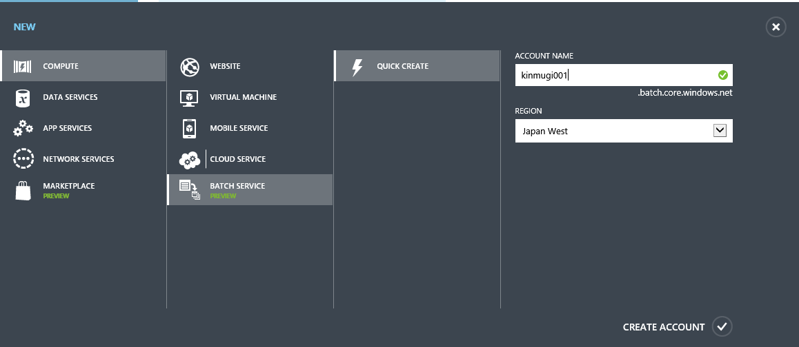
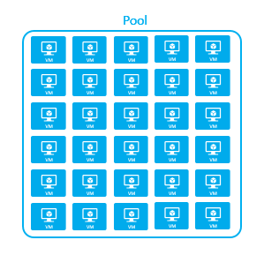
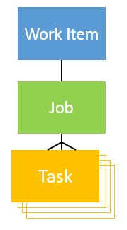
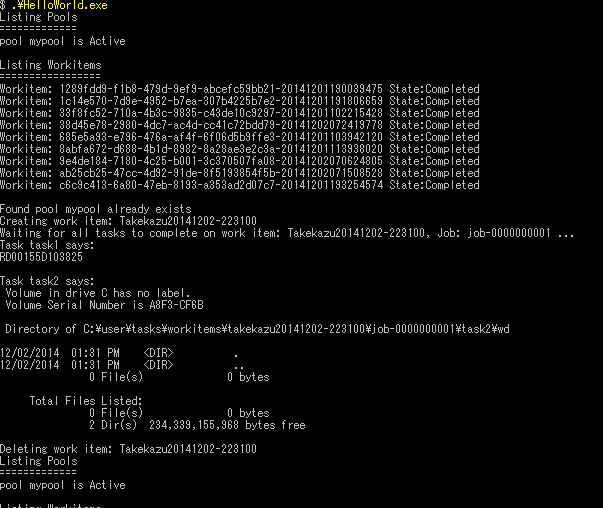
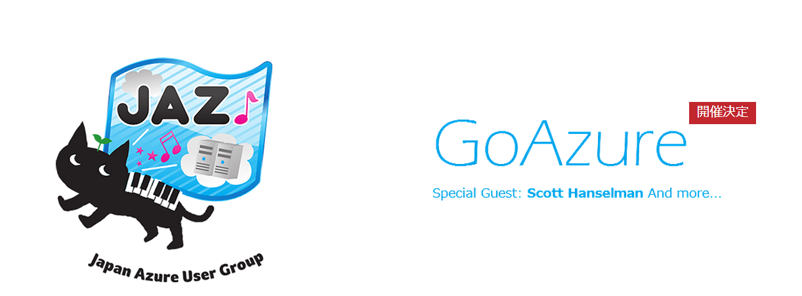

Introduction to Azure Batch
※本記事は、 Azure Advent Calendar 2014 への寄稿記事です。
最近あまりに Azure の新機能が続々と出てくるので、なかなかフォローが難しですが、そんな時は、 No.1のBlog と、 twitterで #azurejp を見ておけば良いですね。
そんな数ある今年のAzure新機能の中で、 DocumentDB と、 Batch の２つがお気に入りです。 DocumentDB については、過日仙台で話をしたので、その時の 資料 を観てもらうことににして、今回は Azure Batch を紹介します。 公式名称は、 Batch ということなのですが、一般名称を製品名に使うのは紛らわしいので止めて欲しいですが、ここでは、それを曲げて、 Batch と書きます。
Batch は、2014/10/28 に行われた TechEd Europe の Keynote でお披露目されました。その時の動画が公開されています。 開始から 1:11 ぐらいから Batch の紹介が始まって、1:15 から Mark Russinovich が blender を使った3Dレンダリングを見せてくれます。そこだけなら、そんなに長くないしお勧めです。

.
Batch とは
簡単に言うと、バッチ処理向けのPaaSです。WorkerRoleを使ってバッチ処理を組むのに比べると、ジョブ·キュー、スケジューラ、VMのプロビジョニングなどをアプリケーション側で用意する必要がありません。また既存のexeファイルをクラウド上で大量に実行することなどが容易に出来るようになっています。Microsoft内部では、Media Serviceが動画のエンコードの処理の部分で使っているそうです。 Batch のコンセプトと用語について説明します。
Azure Batch Account
Batch サービスを使うには、Bach アカウントが必要で、そのアカウントはポータルで作成します。アカウントを作成すると、サブスクリプション、リージョン、アカウント名とキーが確定します。アカウント名とキーはコードで利用します。
SDK
Bach では、低レベルのHTTP REST APIと、高レベルの Batch Apps を用意しています。現在のところ、 .NET 向け Batch Apps Cloud SDK 、 Batch Apps Client SDK と、 python 向け SDK が用意されていて、 Visual Studio 向けの extension もあります。
Azure Batch REST API
低レベルのHTTP REST API では、VM pool の管理、work item の実行を柔軟にコントロールすることができます。この方法では、あなたのリソースを完全に制御できますが、タスク実行パイプラインを管理するためにクライアントが必要です。
Azure Batch Apps
もう一つの高レベルの仕組みとして、 Batch Apps と呼ばれる機能が用意されています。この仕組みでは、バッチワークロードを登録し、クライアントあるいは、Batch Apps portal から実行することが出来るなどよりユーザーよりの管理機能を用意しています。

Pools
バッチを実行する、ノードのグループです。Poolは、複数のVMで構成され、VMは、auto scaling rules で増減します。PoolへのVMの追加が必要な場合は、自動的に新規ノードが作成・追加されます。
Task Virtual Machines (TVMs)
TVMs は、Poolを構成する、compute nodeの１つです。 Batch 用に構成された Web/Worker Role と思ってください。scalable で stateless な仮想マシンとして利用できます。Poolに TVMs が追加される場合は、新規にクリーンな仮想マシンが用意されます。そのため、Poolの作成には少々時間がかかります。初期ノード数を指定して試してみたところ、1ノードで8分、100ノードぐらいの時間がかかりました。（Japan West、A1）
Work Items
Work Items は、アプリケーションがプールでTVMs上で実行される方法を指定するテンプレートです。スケジューリングの設定（execute once とか 実行時間制限など）や、どの Pool でjobを実行するかなどを指定します。
Jobs
jobは、work item のスケジュールされたインスタンスで、一度だけ実行されたり、何度か実行されたりします。複数の task の集まりです。個々の task は、pool のどこかのTVM で実行されます。
Tasks
task は、job の中の一つの実行ステップです。 work item, job, task の関係は、下記の図のようになります。
Batch APIのサンプルコード
現時点では、 Batch のサンプルコードが6個 コードレシピ に上がっています。そのうち、 Azure Batch Sample - Hello World <Batch AppsがBatch APIのサンプルで、 `Microsoft Azure Batch Apps Samples がBatch Apps のサンプルでした。
Batch APIのサンプルの Hello World の方をざっと眺めます。
packages.config
まず、 packages.config <https://code.msdn.microsoft.com/Azure-Batch-Sample-Hello-6573967c/sourcecode?fileId=127847&pathId=1932330368> を眺めます。最近、サンプルコードや、他人のコードを見る時は、最初にpackages.configを見るようになりました。どんなライブラリを使ってるかを把握しておくと理解が速くなる気がしています。
Azure.Batch を使っています。APIリファレンスは、 Batch にあります。
設定
試しに動かして見ようとするならば、 BatchとStorageのアカウントが必要です。 これらを作成したら、Program.csに書き込みます。変更するのは、赤線部分、blobのendpoint、batchのアカウント、キー、ストレージのアカウント、キーの5箇所です。

実行
VSでビルドして実行すると下記のような感じで動きます。このサンプルを動かすだけならば、VS extension は必要ありません。
1. BatchClient
Batch アカウント、キーから、BatchCredentialsを作成して、BatchClient.Connect で BatchClientを取得します。
// Get an instance of the BatchClient for a given Azure Batch account.
BatchCredentials cred = new BatchCredentials(Account, Key);
using (IBatchClient client = BatchClient.Connect(Url, cred))
{
...
2. Pool
Poolを用意しますが、もしあれば使います。Poolは、PoolManager経由で操作します。Pool 名はBatch アカウント内でユニークな名前で無ければいけません。 Pool作成時に、VMのサイズやOSを指定します。
private static void CreatePoolIfNotExist(IBatchClient client, string poolName)
{
// All Pool and VM operation starts from PoolManager
using (IPoolManager pm = client.OpenPoolManager())
{
// go through all the pools and see if it already exists
bool found = false;
foreach (ICloudPool p in pm.ListPools())
{
// pools are uniquely identified by their name
if (string.Equals(p.Name, poolName))
{
Console.WriteLine("Found pool {0} already exists", poolName);
found = true;
break;
}
}
if (!found)
{
Console.WriteLine("Creating pool: {0}", poolName);
// if pool not found, call CreatePool
//You can learn more about os families and versions at:
//http://msdn.microsoft.com/en-us/library/azure/ee924680.aspx
ICloudPool pool = pm.CreatePool(poolName, targetDedicated: 3, vmSize: "small", osFamily: "3");
pool.Commit();
}
}
}
}
3. work item
ここはちょっと分かり辛い。CloudTask がTaskで、 次に、Work Itemを定義します。 client.OpenWorkItemManager で、WorkItemManager を取得して。TaskSubmissionHelper を使って、複数のタスクを追加していきます。 最後に、 TaskSubmissionHelper.Commitで、Work Itemが発行されJobとしてインスタンス化されます。 WorkItemManager.GetJobでJobは取得できます。 Jobの実行状況は、TaskStateMonitor で確認することができます。このコードでは、TaskStateMonitor.WaitAll() で全てのjobの完了を待っています。
private static void AddWork(IBatchClient client)
{
using (IWorkItemManager wm = client.OpenWorkItemManager())
{
//The toolbox contains some helper mechanisms to ease submission and monitoring of tasks.
IToolbox toolbox = client.OpenToolbox();
// to submit a batch of tasks, the TaskSubmissionHelper is useful.
ITaskSubmissionHelper taskSubmissionHelper = toolbox.CreateTaskSubmissionHelper(wm, Program.PoolName);
// workitem is uniquely identified by its name so we will use a timestamp as suffix
taskSubmissionHelper.WorkItemName = Environment.GetEnvironmentVariable("USERNAME") + DateTime.Now.ToString("yyyyMMdd-HHmmss");
Console.WriteLine("Creating work item: {0}", taskSubmissionHelper.WorkItemName);
// add 2 quick tasks. Tasks within a job must have unique names
taskSubmissionHelper.AddTask(new CloudTask("task1", "hostname"));
taskSubmissionHelper.AddTask(new CloudTask("task2", "cmd /c dir /s"));
//Commit the tasks to the Batch Service
IJobCommitUnboundArtifacts artifacts = taskSubmissionHelper.Commit() as IJobCommitUnboundArtifacts;
// TaskSubmissionHelper commit artifacts returns the workitem and job name
ICloudJob job = wm.GetJob(artifacts.WorkItemName, artifacts.JobName);
Console.WriteLine("Waiting for all tasks to complete on work item: {0}, Job: {1} ...", artifacts.WorkItemName, artifacts.JobName);
//We use the task state monitor to monitor the state of our tasks -- in this case we will wait for them all to complete.
ITaskStateMonitor taskStateMonitor = toolbox.CreateTaskStateMonitor();
// blocking wait on the list of tasks until all tasks reach completed state
bool timedOut = taskStateMonitor.WaitAll(job.ListTasks(), TaskState.Completed, new TimeSpan(0, 20, 0));
if (timedOut)
{
throw new TimeoutException("Timed out waiting for tasks");
}
// dump task output
foreach (var t in job.ListTasks())
{
Console.WriteLine("Task " + t.Name + " says:\n" + t.GetTaskFile(Constants.StandardOutFileName).ReadAsString());
}
// remember to delete the workitem before exiting
Console.WriteLine("Deleting work item: {0}", artifacts.WorkItemName);
wm.DeleteWorkItem(artifacts.WorkItemName);
}
}
4. 結果の取得
完了後のJobを、CloudJob.ListTasks()して、個々のTaskの実行結果を拾うことができます。このコードでは、 GetTaskFile(Constants.StandardOutFileName) して標準出力を拾っています。
終わり
最後に、work item を消したり、BatchClientをdisposeしたりなどの後処理をします。基本的な流れは割りとシンプルだと思います。Batch Appsを使うと、予めクラウド側にアプリを登録して置いて、ポータルから実行したり、モニターもポータル経由で出来たりなど諸々便利機能が使えます。その分ちょっと面倒になる部分もありますが、VS extension がその辺りのデバッグなどを支援してくれるようです。
最後に
Batch は、非常に定型的なコードで、ラージスケールなバッチ処理を実行できる面白い仕組みになっています。Azureの諸々の仕組みと上手く組み合わって、簡単なことならHadoop よりシンプルに同じようなことが実現できると言えそうです。ただ、ちょっとWork Item周りの処理が分かり辛く残念です。わりと簡単に使えるし、日本のデータセンターにも来ているので、興味があれば使ってみれば、良いのではないでしょうか。
この前Blogを書いてからだいぶ時間が空いてしました。今年はJAZUG でやっている CDP勉強会 が次回第五回で延べ400人ほどの参加になりそうな勢い、 slideshareの資料 は累積で7万PVを超える勢いで、Microsoft Azure の熱を肌に感じる１年でした。（slideshare のPVは2014/1/1 時点で5千ほどだったので急激に増えました）
GoAzure 2015
あの Scott Hanselman が来る！ ～ GoAzure が 1/16 に開催～ の GoAzure で、Storage周りの話しをします（予定） Persistence on Azure - Microsoft Azure における永続化 お待ちしてます。